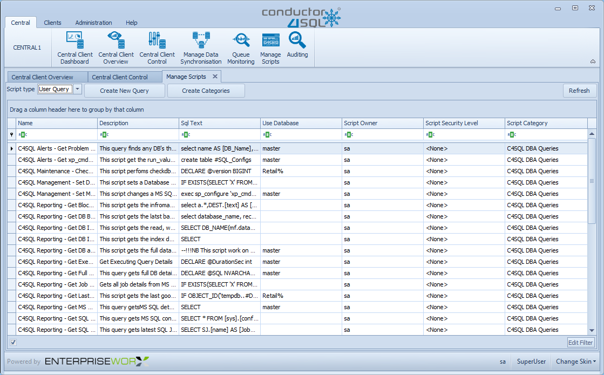

Manage Scripts Overview
The purpose of the manage scripts screen is to store and organize all the scripts that you repeatedly send to the installed clients.

You can select User Query or User Command in the script type drop down list to switch between the two script types.
Script Categories assist in organizing the scripts, you can add more by clicking on the Create Categories button.
You can right click on any script in the grid and you will have the following options:
- Send To All - send the script to all clients
- Send To Group - send the script to a single group of clients
- Send To Some - send the script to a selected list of clients
- Edit - open the Script Editor to edit the user command or query
Lastly you can click on the Create New Query button which will bring up the Script Editor for saving a new script.